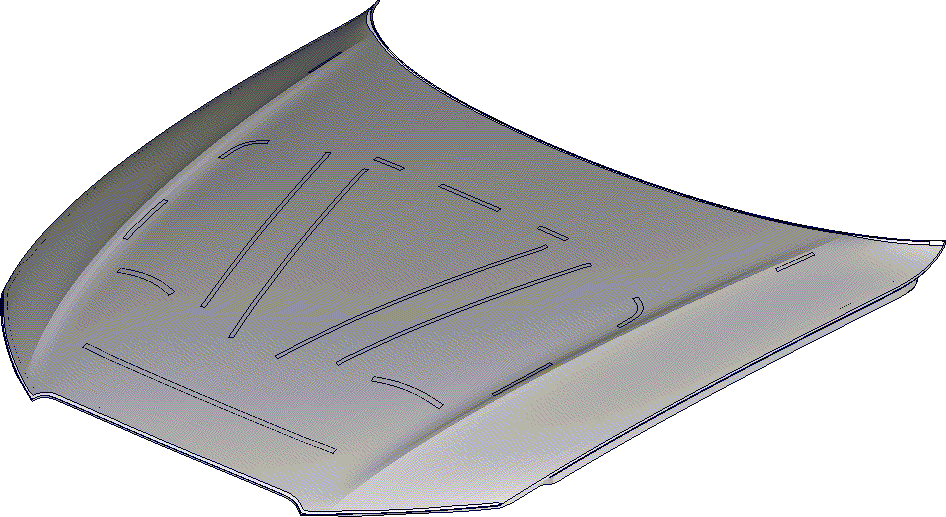
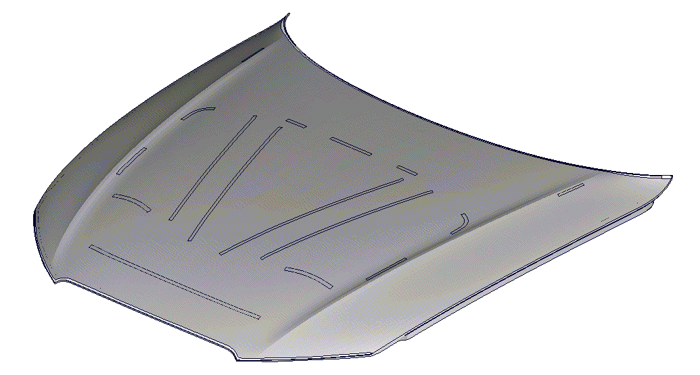
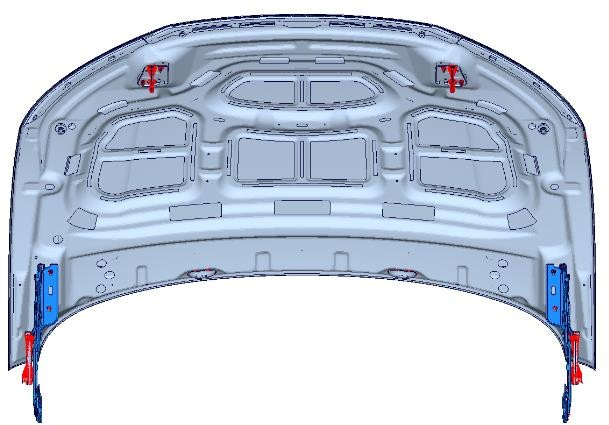
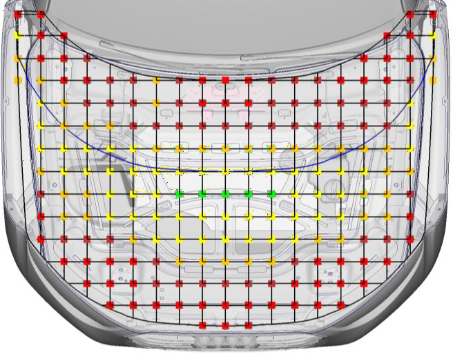
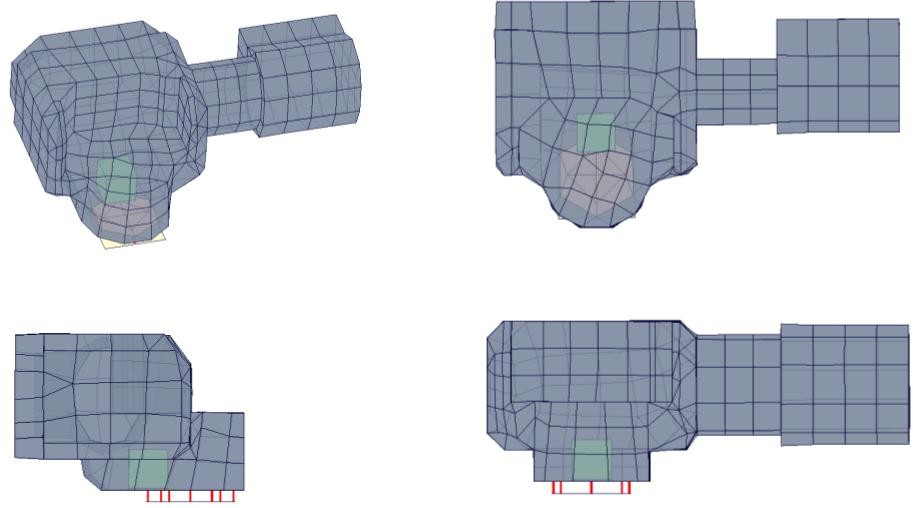

[redacted]/OE [redacted-id]
Telefon [redacted-phone]
579677
Telefax [redacted-phone]-
579677
E-Mail [redacted-email]
Erstausgabe [redacted-phone]
Änderungsstand [redacted-phone]
[redacted-person] Fußgängerschutz
LAH.8V0.880.AS
Verteiler:
|
|
|
|---|
Vertraulich. [redacted-person] vorbehalten. Weitergabe oder Vervielfältigung ohne vorherige schriftliche Zustimmung des Fachbereiches [redacted-co] verboten. Vertragspartner erhalten dieses Dokument nur über die zuständige Beschaffungsabteilung.
VOLKSWAGEN [redacted-co]
Beinaufprall und Hüftaufprall 18
Einheiten und Koordinatensysteme 25
Vertraulich. [redacted-person] vorbehalten. Weitergabe oder Vervielfältigung ohne vorherige schriftliche Zustimmung des Fachbereiches der Volkswa- gen AG verboten. Vertragspartner erhalten dieses Dokument nur über die zuständige Beschaffungsabteilung.
VOLKSWAGEN [redacted-co]
Beinaufprall FlexPLI und aPLI 28
Abstimmung
Vertraulich. [redacted-person] vorbehalten. Weitergabe oder Vervielfältigung ohne vorherige schriftliche Zustimmung des Fachbereiches der Volkswa- gen AG verboten. Vertragspartner erhalten dieses Dokument nur über die zuständige Beschaffungsabteilung.
Only applies to English translation: [redacted-person] translation is believed to be accurate. In case of discrepancies the German version shall govern.
VOLKSWAGEN [redacted-co]
|
|
|
|---|---|---|
| [redacted-person] | [redacted-person] | [redacted-person] |
| [redacted-person] |
|
[redacted-person] |
| [redacted-person] |
|
[redacted-person] |
| [redacted-person] |
|
[redacted-person] |
| [redacted-person] |
|
[redacted-person] |
| [redacted-person] |
|
[redacted-person] |
| [redacted-person] |
|
[redacted-person] |
| [redacted-person] |
|
[redacted-person] |
| [redacted-person] | [redacted-person] | [redacted-person] |
| [redacted-person] |
|
[redacted-person] |
| [redacted-person] |
|
[redacted-person] |
| [redacted-person] |
|
[redacted-person] |
| [redacted-person] | [redacted-person] | [redacted-person] |
Vertraulich. [redacted-person] vorbehalten. Weitergabe oder Vervielfältigung ohne vorherige schriftliche Zustimmung des Fachbereiches [redacted-co] verboten. Vertragspartner erhalten dieses Dokument nur über die zuständige Beschaffungsabteilung.
VOLKSWAGEN [redacted-co]
|
|
|
|---|---|---|
| [redacted-person] |
|
[redacted-person] |
| [redacted-person] |
|
[redacted-person] |
| [redacted-person] |
|
[redacted-person] |
| [redacted-person] |
|
[redacted-person] |
Vertraulich. [redacted-person] vorbehalten. Weitergabe oder Vervielfältigung ohne vorherige schriftliche Zustimmung des Fachbereiches der Volkswa- gen AG verboten. Vertragspartner erhalten dieses Dokument nur über die zuständige Beschaffungsabteilung.
Only applies to English translation: [redacted-person] translation is believed to be accurate. In case of discrepancies the German version shall govern.
VOLKSWAGEN [redacted-co]
[redacted-person] beschreibt Anforderungen an Modellierungs- und Simulationstechniken, wel- che bei der [redacted-person] und Frontklappensteifigkeit eingesetzt wer- den. [redacted-person] bildet die Grundlage für den zu erbringenden Leistungsumfang des Auftrag- nehmers.
In diesem Lastenheft wird die anzuwendende Methodik detailliert beschrieben. [redacted-person] resultiert aus der Entwicklungserfahrung der [redacted-co] und ist deshalb für den Entwicklungspro- zess bindend. [redacted-person] der Simulationsergebnisse auf hohem Niveau soll damit si- chergestellt werden. [redacted-person] sind nur dann zulässig, wenn sie in [redacted-person] besser oder bei gleicher Exaktheit effektiver sind und dies der [redacted-co]-Fachabteilung ein- deutig bewiesen und von dieser akzeptiert wurde.
[redacted-person] zu fußgängerschutzrelevanten Prüfvorschriften, Prüfkörpern und Grenz- werten sind dem projektspezifischen [redacted-person] zu entnehmen. [redacted-person] für das Fahrzeugprojekt sind dem typbezogenen Lastenheft der Fahrzeug- sicherheit zu entnehmen.
Abweichungen von diesem Lastenheft sind während der Angebotsphase mit der [redacted-person]- tionsauslegung Fußgängerschutz abzustimmen und schriftlich (mit Unterschrift [redacted-co]) festzuhalten. Dieses gilt für vom Entwicklungspartner ausgeschlossene Teilumfänge, und für, aus dessen Sicht, zusätzliche erforderliche Umfänge.
Inhalte dieses Lastenheftes dürfen Dritten ohne ausdrückliche Genehmigung durch die [redacted-co] nicht zugänglich gemacht werden. Sollte durch Nichtbeachtung des [redacted-person] entstehen, behält sich die [redacted-co] das Recht vor, den Auftrag zu stornieren oder zu Lasten des Auftragnehmers, einen Dritten zu beauftragen um dies auszugleichen.
Leistungsportfolio
Vernetzung
Modellierung
Modellaufbau
Analysen
Dokumentation
[redacted-person]
Preprocessor: ANSA, Generator, LoCo
Solver: PamCrash explizit und implizit
Postprocessor: Animator4, CAE-Bench, CAViT, LoCo
Bearbeiter:
kurzfristige Meetings (innerhalb von 30 Minuten) möglich
erfahrene Mitarbeiter
Bei der Fußgängerschutz-Auslegung werden grundsätzlich drei unterschiedliche Impaktor-ar- ten bzw. Prüfkörperarten eingesetzt:
Kopf ([redacted-person]) 3.5kg und 4.5kg,
Bein ([redacted-person]): WG17-Impaktor, FlexPLI, aPLI
Hüfte (Oberschenkel, [redacted-person]).
Mit diesen Impaktoren wird der Vorderwagen auf seine Fußgängerschutzfreundlichkeit hin un- tersucht. Dabei wird das Bein gegen das Stoßfängersystem, die Hüfte gegen die Motorhauben- vorderkante und der Kopf gegen die Frontklappe und die Frontscheibe geschossen.
[redacted-person] des Deformationsraums beim Kopfaufschlag kann eine aufstellende Front- klappe zum Einsatz kommen, welche angehoben wird und somit den Abstand zu harten Motor- bauteilen vergrößert. Daraus resultieren zusätzliche Auslegungslastfälle:
Ermittlung der notwendigen Anstellhöhe der aufstellenden Haube
Menschmodellsimulationen (HBM), Simulationen mit Lower-Limit-Impaktoren
Frontklappenaktivierung im Gesamtfahrzeug
Festigkeitsauslegung der Frontklappenstruktur (keine Plastifizierung der Haube beim Anstellen)
Reduzierung der Frontklappenschwingungen beim Aufstellen
Bestimmen der notwendigen Randbedingungen für Aktuatoren
[redacted-person] zu Peripherie prüfen und „Verhaken“ reduzieren
[redacted-person] Aufstellung der Frontklappe und Beinanprall (getriggert unter Verwendung der Zündzeitvorgabe) zur Sicherstellung einer funktionierenden und zeitgerechten Aufstellung
Verwendung eines Ersatzmodell auf komponentenebene (FKL + Scharniere) in früher Projektphase möglich, falls kein ausreichendes Fahrzeugmodell zur Verfügung steht
Abstimmen einer FGS-Sensor-tauglichen Fahrzeugfront
gegebenenfalls, FGS-Airbag-Simulation
Für die Auslegung der FGS-Sensorik werden grundsätzlich 2 Impaktorarten verwendet. Es wird unterschieden zwischen Mustfire- und Misuse-Impaktoren. [redacted-person] des Vorderwagens erfolgt so, dass bei Anprall der Mustfire-Objekte ausreichend Signal der Kontaktsensorik vor- handen ist. Zudem soll eine Trennung der Signale von Mustfire- und Misuse-Objekten gegeben sein.
Für diese Untersuchungen können folgende Impaktoren berücksichtigt werden.
Lower-Leg WG-17 (TRL)
Lower-Leg FlexPli
PDI-Impactor
PDI2-Impactor
Kleintier
Basketball
Im Folgenden werden die Standard- und Missbrauchslastfälle zur Auslegung der Frontklappen- steifigkeit beschrieben.
Standardumfänge:
[redacted]
[redacted-person] am Scharnier Komfortlastfälle:
einseitiges [redacted-person]- und [redacted]Quersteifigkeit
[redacted-person]:
Abheben aus der Straklage.
[redacted-person] bei der Einarbeitung wird von der betreuenden Berechnungsabteilung ein FE- Modell aus einem Vorgängerprojekt zur Verfügung gestellt. Mit der betreuenden Berechnungs- abteilung ist in Absprache mit der zuständigen Versuchsabteilung vorab zu klären, ob die Origi- nalscharniere oder die steiferen Prüfscharniere verwendet werden (Adapter für Eingelenk-, Mehrgelenkscharniere nach Konzernnorm PV 3551).
[redacted-person] der Steifigkeitslastfälle mit [redacted-person] Implizit ist die Verwendung von Material- typ 100 nicht zulässig.
[redacted-person] zu den jeweiligen Lastfällen sind den zugrundeliegenden Prüfvorschriften zu entnehmen bzw. bei der [redacted-person] einzuholen.
Vertraulich. [redacted-person] vorbehalten. Weitergabe oder Vervielfältigung ohne vorherige schriftliche Zustimmung des Fachbereiches der Volkswa- gen AG verboten. Vertragspartner erhalten dieses Dokument nur über die zuständige Beschaffungsabteilung.
VOLKSWAGEN [redacted-co]

Für diesen Lastfall sind immer die Originalscharniere zu verwenden.
[redacted-person] der Scharniere ist abzubilden. [redacted-person] der Scharniere erfolgt an den Schraubpunkten mit der Karosserie.
Zusätzlich werden die Schließbügel in der Mitte eines lokalen Koordinatensystems so einge- spannt, dass die y- und z-Verschiebungen und die um x und z-Rotationen gesperrt sind.
Aufeinanderfolgend werden folgende Randbedingungen und Lasten als Einzelsteps auf dem Modell eingebracht:
Step 1: Gravitation
Step 2:
Step 2a: [redacted-person]
Step 2b: ggf. Vorspannkraft der Schlieβbügel
Vertraulich. [redacted-person] vorbehalten. Weitergabe oder Vervielfältigung ohne vorherige schriftliche Zustimmung des Fachbereiches der Volkswa- gen AG verboten. Vertragspartner erhalten dieses Dokument nur über die zuständige Beschaffungsabteilung.
Only applies to English translation: [redacted-person] translation is believed to be accurate. In case of discrepancies the German version shall govern.
VOLKSWAGEN [redacted-co]
Step 2c: [redacted-person]
Step 2d: [redacted-person] (Wasserkastendichtung inkl. [redacted-person], ggf. Frunk-Dichtung, ggf. FKL-[redacted-person] oder Auf- schlagschutz SFÜ)
Step 3: Einbringen des Aussendrucks
Step 4: Einbringen des Aussendrucks und des Innendrucks.
[redacted-person] an der geschlossenen Fronthaube wird durch Strömungssimulation ermittelt. [redacted-person]- und Innendruck-Werte, die elementweise ausschließlich am Außenblech gemit- telt werden, werden von der Strömungssimulationsabteilung zur Verfügung gestellt.
Ausgewertet werden die z-Verschiebungen der Klappe, relativ gemessen zwischen Step 2 (bzw. 2d) und Step 4.
Für die weitere Interpretation der Ergebnisse durch andere Fachabteilungen (u.a. N/P3-B14/15 und N/P3-B24) ist die verformte Geometrie jeweils nach Step 1, Step 2a, Step 2b, Step 2c und Step 2d sowie die undeformierte Geometrie (CAD0) im STL-Datenformat der Abteilung N/P3- M5x (Geometrieanalyse) zur Verfügung zu stellen. Die weitere Verarbeitung der Daten obliegt der P Fachabteilung. [redacted-person] sind bei Projektbeginn bei der Führungskraft N/P3- M5x zu erfragen bzw. von der [redacted-co]-Fachabteilung zur Verfügung zu stellen.
Am Ende des Step 2 der [redacted-person] wird die Position in z des Außenblechs relativ zur Straklage verglichen.
<123456>
<123456>
N
<123456>
[redacted-person] ist mit den Originalscharnieren durchzuführen. Diese werden an den Karosse- rie-Anschraubstellen fest (Freiheitsgrade 1 bis 6 gesperrt) definiert.
[redacted-person] wird an einem Puffer fest eingespannt (Freiheitsgrade 1 bis 6 gesperrt).
Eine in negative z-Richtung wirkende Kraft von 150 N ist am gegenüberliegenden Puffer aufzu- bringen.
Ausgewertet wird die z-Verschiebung am Lastangriffspunkt am Innenblech.
Vertraulich. [redacted-person] vorbehalten. Weitergabe oder Vervielfältigung ohne vorherige schriftliche Zustimmung des Fachbereiches der Volkswa- gen AG verboten. Vertragspartner erhalten dieses Dokument nur über die zuständige Beschaffungsabteilung.
VOLKSWAGEN [redacted-co]
<123456>
<-3>
<23>
<123456>
Scharnier
<23>
Schlossbügel
<-3>
Puffer (Nur in negative z-Richtung gesperrt. Ein abheben ist möglich)
Legende
F Kraftrichtung
X Abstand MP38/39 (Krafteinleitung) bis MP40/41, X=20mm
MP38/39 Messpunkte 38/39 zur Krafteinleitung an der [redacted-person] MP40/41 Messpunkte 40/41 im Abstand zur [redacted-person]
MP42/43 Messpunkte 42/43 mittig zwischen den klappenseitigen Scharnierbefestigungspunkten
Vertraulich. [redacted-person] vorbehalten. Weitergabe oder Vervielfältigung ohne vorherige schriftliche Zustimmung des Fachbereiches der Volkswa- gen AG verboten. Vertragspartner erhalten dieses Dokument nur über die zuständige Beschaffungsabteilung.
Only applies to English translation: [redacted-person] translation is believed to be accurate. In case of discrepancies the German version shall govern.
VOLKSWAGEN [redacted-co]
Die geschlossene Frontklappe muss im Scharnierbereich eine ausreichende Aushebesteifigkeit besitzen. [redacted-person] darf sich durch aerodynamische Kräfte während der Fahrt, insbesondere Windschattenfahrt (Abrissströmung), simuliert durch eine Vorspannkraft F nur bis zu einem fest- gelegten Wert (Vergleich mit als ausreichend steif beurteilten Frontklappen) ändern.
[redacted-person] ist mit den Originalscharnieren durchzuführen. Diese werden an den Karosserie- Anschraubstellen fest (Freiheitsgrade 1 bis 6 gesperrt) definiert. Zusätzlich werden die Schließ- bügeln in der Mitte eines lokalen Koordinatensystems so eingespannt, dass die y- und z-Ver- schiebungen und die z-Rotationen gesperrt sind. [redacted-person] wird ebenso an beiden Puffer in Z- Richtung eingespannt (Freiheitsgrad 3 gesperrt).
Eine in positive z-Richtung wirkende Kraft von 200N bzw. 300N ist am Punkt MP38/MP39 aufzu- bringen.
Ausgewertet wird die z-Verschiebung an den Messpunkten MP40/41 bzw. MP42/43.

<123456>
<123456>
F
Vorspannung lösen).
[redacted-person] wird an den Kugelzapfen der Gasfedern (FKL seitig) in z-Richtung gesperrt.
Eine in negative z-Richtung wirkende Kraft am vorderen Puffer ist aufzubringen. [redacted-person] wird im Versuch ermittelt. Solange keine projekt-spezifische Kraft ermittelt werden kann (keine Proto- typen), soll die Kraft des Vorgängerfahrzeugs genommen werden.
Vertraulich. [redacted-person] vorbehalten. Weitergabe oder Vervielfältigung ohne vorherige schriftliche Zustimmung des Fachbereiches der Volkswa- gen AG verboten. Vertragspartner erhalten dieses Dokument nur über die zuständige Beschaffungsabteilung.
VOLKSWAGEN [redacted-co]
Stahl
EPDM
[redacted-person]
Kontaktfläche gerundet Kontaktfläche plan,

d=50mm d=70mm
d=50mm d=70mm
Es wird an mehreren Positionen geprüft. [redacted-person] werden mit der Versuchsabteilung bzw. mit dem Frontklappen-Konstrukteur fahrzeugspezifisch abgestimmt.
Auslegungskriterien für Poliersteifigkeit und Grifffestigkeit:
Prüfkraft maximal 200N
Keine bleibenden, sichtbaren Deformationen
[redacted-person] in der Kraft-Weg-Kurve unter 80N („Knackfroscheffekt“)
Wendepunkt bei 80N<F<120N nur mit positiver Steigung im Wendepunkt
Wendepunkt bei F>120N nur mit Steigung >=0 im Wendepunkt
Vertraulich. [redacted-person] vorbehalten. Weitergabe oder Vervielfältigung ohne vorherige schriftliche Zustimmung des Fachbereiches der Volkswa- gen AG verboten. Vertragspartner erhalten dieses Dokument nur über die zuständige Beschaffungsabteilung.
Only applies to English translation: [redacted-person] translation is believed to be accurate. In case of discrepancies the German version shall govern.
VOLKSWAGEN [redacted-co]
Ziel des Lastfalls ist es sicherzustellen, dass beim Schließen der Frontklappe genügend Freigang vorhanden ist.
[redacted-person] findet im Gesamt-Vorderwagenmodell statt. Dabei wird die Frontklappe mit der realen Scharnierkinematik soweit aufgedreht, dass die Schließbügel vollständig über dem Fang- haken stehen.

Es soll dann auf die FKL eine Winkelgeschwindigkeit aufgegeben werden, sodass die Front- klappenvorderkante bei Y0 eine Schließgeschwindigkeit von 2,5m/s besitzt.
Eine detaillierte Modellierungsrichtlinie ist bei der Fachabteilung zu erfragen.
[redacted-person] müssen bei geöffneter Frontklappe eine ausreichende Quersteifigkeit besitzen. Durch eine seitlich eingeleitete Kraft ist eine Gesamtverformung nur bis zu einem festgelegten Wert zulässig.
[redacted-person] ist mit den Originalscharnieren und ohne Gasfeder durchzuführen. Kraftangriffspunkt ist an der Frontklappe am [redacted-person]-Kotflügel-Frontklappe. Gedrückt wird konstant mit 200N in Y [redacted-person].

F=200N in YVertraulich. [redacted-person] vorbehalten. Weitergabe oder Vervielfältigung ohne vorherige schriftliche Zustimmung des Fachbereiches der Volkswa- gen AG verboten. Vertragspartner erhalten dieses Dokument nur über die zuständige Beschaffungsabteilung.
VOLKSWAGEN [redacted-co]
Randbedingungen:
[redacted-person] zu Scharnier/Frontklappe: Verschiebungen z gesperrt
Scharniergelenke: [redacted-person] gesperrt (zur Stabilität des Modells)
[redacted-person] zur Karosserie: [redacted-person] gesperrt Eine detaillierte Modellierungsrichtlinie ist bei der Fachabteilung zu erfragen.
Grundsätzlich ist jedes Berechnungsmodell LoCo-tauglich aufzubauen. Sodass in LoCo alle Modelle aufgebaut und alle Simulationen standardmäßig aus LoCo heraus gestartet werden. Das heißt die Modulstrategie von LoCo muss eingehalten werden und die aktuell gültigen Checks des Inputchecker müssen erfüllt werden.
Das FGS-Berechnungsmodell setzt sich aus folgenden Teilen zusammen:
Impaktormodell,
komplettes Vorderwagenmodell (inkl. FGS-Sensorik)
Prüffelder für Gesetz und EuroNCAP.
[redacted-person] wird entwicklungsbegleitend durchgeführt. Änderungen an der Fahrzeugfront sind rechnerisch zu bewerten.
[redacted-person] sind die Modelle, die im Volkswagen-Konzern verwendet werden, einzusetzen. Diese sind der Impaktoren-Datenbank bzw. LoCo Impaktoren-Pool zu entnehmen. [redacted-person] von eigenen Impaktoren ist nur zulässig, wenn das entsprechende Modell aus Lizenzgründen nicht direkt vom Volkswagen-Konzern zur Verfügung gestellt werden kann. In diesem Fall muss der ent- sprechende Impaktor selbständig beschafft werden, wobei die zu verwendende Version durch die [redacted]festgelegt wird.
[redacted-person] der Impaktorendatenbank und des LoCo Impaktoren-Pools darf ausschließlich für Pro- jekte des Volkswagen-Konzerns erfolgen.
Das komplette Vorderwagenmodell enthält mindestens:
[redacted-person],
Frontscheibe,
Kotflügel,
Frontklappe,
Scharniere,
Vertraulich. [redacted-person] vorbehalten. Weitergabe oder Vervielfältigung ohne vorherige schriftliche Zustimmung des Fachbereiches der Volkswa- gen AG verboten. Vertragspartner erhalten dieses Dokument nur über die zuständige Beschaffungsabteilung.
Only applies to English translation: [redacted-person] translation is believed to be accurate. In case of discrepancies the German version shall govern.
VOLKSWAGEN [redacted-co]
Motorraumpackage (nur bei der Kopfaufprall-Simulation),
Wasserkastenpackage (nur bei der Kopfaufprall-Simulation),
Frontend inkl. Kühlersysteme,
Scheinwerfer,
Stossfängersystem,
Crashmanagementsystem.
[redacted-person] des [redacted-person] ist bauteil- / baugruppenorientiert in Include-Files zu gestalten. In LoCo ist die Änderungshistorie der Poolversionen und Includes aussagekräftig zu pflegen.
[redacted-person] Vorderwagen wird, sofern vorhanden, von der zuständigen [redacted-co] Fachabteilung über LoCo zur Verfügung gestellt.
Für den reibungslosen Ablauf zwischen den Simulationsbereichen liegt eine Konvention bei den [redacted-co] Fachabteilungen vor. [redacted-person]-IDs, Element-IDs und PART-IDs müssen die im VW- Konzern abgestimmte Nummerierungskonvention einhalten.
Alle FGS-Modelle müssen eine geeignete Include-File-Struktur aufweisen, welcher der Modul- strategie von LoCo entspricht. Die entsprechenden Vorgaben werden durch die [redacted-co] Fachabtei- lung zur Verfügung gestellt. Jedes der Includes muss dabei in sich abgeschlossen sein, d.[redacted-person] Bezüge auf andere Includes haben.
Weiterhin müssen die aktuell gültigen Checks des Inputchecker für jedes Include und auch das Gesamtberechnungsmodell erfüllt werden.
Die PART-Namen sollen die Teilenummer und den Stand (Datum) der dem FE-Netz zugrunde liegenden CAD-Geometrie enthalten.
Durch die [redacted-person] werden Modellierungsrichtlinien zur Verfügung ge- stellt. Bei jedem Modellaufbau sind diese Richtlinien nach aktuellstem Stand zu beachten und anzuwenden. [redacted-person] sind nur dann zulässig, wenn sie in [redacted-person] besser oder bei gleicher Exaktheit effektiver sind und dies der [redacted-co]-Fachabteilung eindeutig be- wiesen und von dieser akzeptiert wurde.
Es soll grundsätzlich mit wahren Kontakt-Dicken simuliert werden.
[redacted-person] EuroNCAP Grid
[redacted-person] werden entsprechend ihrer Lage im EuroNCAP Prüffeld (siehe aktuelles EuroN- CAP-Protokoll: [redacted-person]) zur Definition der Grid-Punkte (ohne Berücksichtigung von Fahrwerk-Toleranzen) entsprechend der Abbildung unten bezeichnet.
[redacted-person] erhalten zusätzlich einen Index L oder R zur Bezeichnung der Fahrzeugseite.
Vertraulich. [redacted-person] vorbehalten. Weitergabe oder Vervielfältigung ohne vorherige schriftliche Zustimmung des Fachbereiches der Volkswa- gen AG verboten. Vertragspartner erhalten dieses Dokument nur über die zuständige Beschaffungsabteilung.
VOLKSWAGEN [redacted-co]
[redacted-person] der Prüfpunkte ist in Erprobung und Simulation einheitlich.
Die ersten zwei Stellen beschreiben X-Position der Reihe. 99 Reihen sind möglich. Die erste Reihe (WAD1000 bei Y=0) fängt mit 00 an.
[redacted-person] 3 und 4 beschreiben Y-Position des Punktes (Spalte). 99 Punkte pro Reihe möglich. [redacted-person] (bei Y-0) fängt mit 00 an.
[redacted-person] Kopf EuroNCAP Grid

[redacted-person] Gesetz
[redacted-person] der Prüfpunkte und die entsprechende Bezeichnung sind im FGS-Funktions- LAH definiert.
[redacted-person] der Prüfpunkte und die entsprechende Bezeichnung sind im FGS-Funktions- LAH definiert.
[redacted-person], die bei der Kopfaufprallsimulation relevant sind, sind möglichst realistisch bezüglich Kontakten, Steifigkeit und Geometrie zu modellieren. Das sind Bauteile die mit dem Kopf-Impak- tor direkt in Kontakt treten, oder indirekt in Kontakt mit anderen deformierbaren Bauteilen kom- men.
Vertraulich. [redacted-person] vorbehalten. Weitergabe oder Vervielfältigung ohne vorherige schriftliche Zustimmung des Fachbereiches der Volkswa- gen AG verboten. Vertragspartner erhalten dieses Dokument nur über die zuständige Beschaffungsabteilung.
Only applies to English translation: [redacted-person] translation is believed to be accurate. In case of discrepancies the German version shall govern.
VOLKSWAGEN [redacted-co]
Bauteile, die nicht anhand von CAD-Zeichnungen erstellt werden können, müssen (insbesondere in frühen Konzeptphasen) aus ähnlichen, bereits bekannten Bauteilen anderer Fahrzeuge mo- delliert werden.
[redacted-person] der Frontklappe müssen im Frontklappen-Modell enthalten sein:
Innenblech
Außenblech
Stützkleber
Fanghakenverstärkungen
Schlossbügel
Scharnierverstärkungen
Scharniere mit richtig abgebildeter Kinematik
Frontklappenpuffer
Frontklappendichtung
Im Folgenden wird auf die Schusspunkte eingegangen:
Für die Erstellung eines Status soll eine Schusspunktdichte entsprechend dem FGS Funktions- LAH verwendet werden, insbesondere für die Ermittlung von Flächenverteilungen zum Gesetz sowie der Gesamtpunktzahl EuroNCAP.
Darüber hinaus sind die für diesen Lastfall problematischen Schusspunkte in Abstimmung mit der Fachabteilung und in Abhängigkeit von der vorliegenden Konstruktion festzulegen.
[redacted-person] können aufgrund von Modelländerungen oder neuen Erkenntnissen jederzeit hin- zukommen. Um den Aufwand für die Untersuchungen zu minimieren sind bei lokalen Änderungen nur die Bereiche zu prüfen, die von der Änderung beeinflusst werden.
Besonders sorgfältig sollen folgende Bauteile abgebildet werden:
komplettes Stoßfängersystem (Überzüge mit Schließteilen, Kühlerschutzgitter, Crashboxen, Querträger, FGS-Schaum),
Scheinwerfer (inkl. Innenleben),
eventuelle [redacted-person] (z.[redacted-person], ACC- Sensoren, oder APS-Sensoren, Kamera, …)
Frontend
Verbindungen, insbesondere am Stoßfängerüberzug müssen möglichst real abgebildet werden, um ein [redacted-person] der Verbindungen darstellen zu können. [redacted-person] sollten weitestgehend vermieden werden.
Vertraulich. [redacted-person] vorbehalten. Weitergabe oder Vervielfältigung ohne vorherige schriftliche Zustimmung des Fachbereiches der Volkswa- gen AG verboten. Vertragspartner erhalten dieses Dokument nur über die zuständige Beschaffungsabteilung.
VOLKSWAGEN [redacted-co]
Bei der Platzierung des Lower-Leg-Impaktors ist die korrekte Fahrzeuglage zu betrachten. [redacted-person] (z.[redacted-person] Hochniveau im Fall eines Fahrzeugs mit Luftfahrwerk) sind ebenso zu berücksichtigen.
Bei der Aufnahme eines Status sind im [redacted-person] alle 50mm in y zu setzen. Die für diesen Lastfall problematischen Schusspunkte sind in Abstimmung mit der Fachabteilung und in Abhängigkeit von der vorliegenden Konstruktion festzulegen. [redacted-person] können aufgrund von Modelländerungen oder neuen Erkenntnissen jederzeit hinzukommen. Um den Aufwand für die Untersuchungen zu minimieren sind bei lokalen Änderungen nur die Bereiche zu prüfen, die von der Änderung beeinflusst werden.
Insbesondere beim [redacted-person]- und Hüftaufprall ist häufig ein Versagen zu beobachten. Des- halb ist bei der Modellierung darauf zu achten, dass das Versagen der betroffenen Bauteile richtig abgebildet wird. Die hierfür gültige Methode wird durch die Fachabteilung vorgegeben.
Grundsätzlich ist darauf zu achten, dass alle für die Sensorik relevanten Bauteile in den Modellen abgebildet sind. Bestmöglich ist das Bein-Simulationsmodell mit dem FGS-Sensorik-Modell zu vereinheitlichen.
[redacted-person] besteht aus einem Sensorgrundkörper und einer Fläche für die Tied An- bindung. [redacted-person]-Fläche für die Umgebungsanbindung befindet sich in einen separaten In- clude, deren Geometrie angepasst werden muss. [redacted-person] werden als Starrkörper modelliert. Für die Materialdefinition wird Nullmaterial verwendet. [redacted-person] für die Tied An- bindung und die Fläche für die Umgebungsanbindung sind mittels eines TIED – Kontakts ver- bunden (maximalle Länge 1.5 mm). [redacted-person] muss nachträglich im Sensor analog CAD-Daten/Zeichnung positioniert werden. Eine detaillierte Modellierungsrichtlinie ist bei der Fachabteilung einzuholen.
[redacted-person] für die Positionierung des Sensorwürfels ist anschließend gezeigt:
Vertraulich. [redacted-person] vorbehalten. Weitergabe oder Vervielfältigung ohne vorherige schriftliche Zustimmung des Fachbereiches der Volkswa- gen AG verboten. Vertragspartner erhalten dieses Dokument nur über die zuständige Beschaffungsabteilung.
Only applies to English translation: [redacted-person] translation is believed to be accurate. In case of discrepancies the German version shall govern.
VOLKSWAGEN [redacted-co]

Um eine Vergleichbarkeit über die Fahrzeugprojekte zu gewährleisten sind die Namen der Mess- stellen entsprechend der ISO Festlegung auszuwählen. Die nachfolgende Liste stellt den Mini- malumfang dar. Zusätzlich neben dem ISO Code gibt es noch einen eindeutigen Beschreibungs- namen.
In PAMCRASH werden die Messstellen für die unterschiedlichen Sensoren und Konfigurationen (Positionen) nach folgendem Schema definiert.
0 ist die Standard-Position, d.[redacted-person] Position entsprechend aktuellem Projektstand
10ABSEFRLE00
Standard-ISO-Code der Messstelle erweitert um die Positionsnummer 0
Standard-Beschreibungsname.
Vertraulich. [redacted-person] vorbehalten. Weitergabe oder Vervielfältigung ohne vorherige schriftliche Zustimmung des Fachbereiches der Volkswa- gen AG verboten. Vertragspartner erhalten dieses Dokument nur über die zuständige Beschaffungsabteilung.
VOLKSWAGEN [redacted-co]
Die zwei hinteren Stellen der Sensor-Nummer Sx01 entsprechen der Nummer, wie diese im Stipulator verwendet wird.
P = Position
Aktuell sind folgende Messstellen für die Standard-Crashsensor festgelegt.
10ABSEFRLE20 S101_UFSL_P0 [redacted-person] X
10ABSEFRMI20 S102_UFSM_P0 [redacted-person] X
10ABSEFRRI20 S103_UFSR_P0 [redacted-person] X
10ABSE000001 S104_ZAE_P0 Airbagsensor ZAE
10FRENFRLE20 S113_FGSL_P0 FGS [redacted-person] X
10FRENMILE20 S119_FGSML_P0 FGS [redacted-person] links X
10FRENFRMI20 S114_FGSM_P0 FGS [redacted-person] X
10FRENMIRI20 S120_FGSMR_P0 FGS [redacted-person] rechts X
10FRENFRRI20 S115_FGSR_P0 FGS [redacted-person] X
10FRENFRLE00 S121_FGSPL_P0 FGS Kontakt-Sensor links
10FRENFRRI00 S122_FGSPR_P0 FGS Kontakt-Sensor rechts
Nach der Konviertierung in ISO-MME-Format sollte die folgende No- menklatur verwendet werden.
10ABSEFRLE20ACX0 S101 UFSL_P0
Channel code: 10ABSEFRLE20ACX0 [redacted-person] X
10ABSEFRMI20ACX0 S102 UFSM_P0
Channel code: 10ABSEFRMI20ACX0 [redacted-person] X
10ABSEFRRI20ACX0 S103 UFSR_P0
Channel code: 10ABSEFRRI20ACX0 [redacted-person] X
10ABSE000001ACX0 S104 ZAEX_P0
Channel code: 10ABSE000001ACX0 Airbagsensor ZAE X
10ABSE000001ACY0 S105 ZAEY_P0
Channel code: 10ABSE000001ACY0 Airbagsensor ZAE Y
10FRENFRLE20ACX0 S113 FGSL_P0
Channel code: 10FRENFRLE20ACX0 FGS [redacted-person] X
10FRENFRMI20ACX0 S114 FGSM_P0
Channel code: 10FRENFRMI20ACX0 FGS [redacted-person] X
10FRENFRRI20ACX0 S115 FGSR_P0
Channel code: 10FRENFRRI20ACX0 FGS [redacted-person] X
10FRENMILE20ACX0 S125 FGSML_P0
Channel code: 10FRENMILE20ACX0 FGS [redacted-person] links X
10FRENMIRI20ACX0 S126 FGSMR_P0
Channel code: 10FRENMIRI20ACX0 FGS [redacted-person] rechts X
10FRENFRLE00PR00 S127_FGSPL_P0
Vertraulich. [redacted-person] vorbehalten. Weitergabe oder Vervielfältigung ohne vorherige schriftliche Zustimmung des Fachbereiches der Volkswa- gen AG verboten. Vertragspartner erhalten dieses Dokument nur über die zuständige Beschaffungsabteilung.
Only applies to English translation: [redacted-person] translation is believed to be accurate. In case of discrepancies the German version shall govern.
VOLKSWAGEN [redacted-co]
Channel code: 10FRENFRLE00PR00 FGS Kontakt-Sensor links
10FRENFRRI00PR00 S128_FGSPR_P0
Channel code: 10FRENFRRI00PR00 FGS Kontakt-Sensor rechts
[redacted-person] aus Animator 4 werden bei der Konvertierung in ISO-MME-Format um die physikali- sche Größe ([redacted-person]), die Messrichtung (Direction) und die Filterklasse ([redacted-person]) erweitert.
[redacted-person]
AC = Acceleration, Default-Einheit = m/(s*s) PR = Pressure, Default-Einheit = Pa
Direction
X = Longitudinal Y = Lateral
0 = Ohne
[redacted-person]
0 = [redacted-person] (Referenz-Signal mit 20KHz)
[redacted-person] werden daher für die Weitergabe der Signale an die Systemlieferanten im ISO MME Format verwendet.
10ABSEFRLE20ACX0 S101 UFS-L_X
Channel code: 10ABSEFRLE20ACX0 [redacted-person] X Name of the channel: S101 UFS-L_X
10ABSEFRMI20ACX0 S102 UFS-M_X
Channel code: 10ABSEFRMI20ACX0 [redacted-person] X Name of the channel: S102 UFS-M_X
10ABSEFRRI20ACX0 S103 UFS-R_X
Channel code: 10ABSEFRRI20ACX0 [redacted-person] X Name of the channel: S103 UFS-R_X
10ABSE000001ACX0 S104 ZAE_X
Channel code: 10ABSE000001ACX0 Airbagsensor ZAE X Name of the channel: S104 ZAE_X
Vertraulich. [redacted-person] vorbehalten. Weitergabe oder Vervielfältigung ohne vorherige schriftliche Zustimmung des Fachbereiches der Volkswa- gen AG verboten. Vertragspartner erhalten dieses Dokument nur über die zuständige Beschaffungsabteilung.
VOLKSWAGEN [redacted-co]
10ABSE000001ACY0 S105 ZAE_Y
Channel code: 10ABSE000001ACY0 Airbagsensor ZAE Y Name of the channel: S105 ZAE_Y
Name of the channel: S112 TAT-R_Y
10FRENFRLE20ACX0 S113 PIS-L_X
Channel code: 10FRENFRLE20ACX0 FGS [redacted-person] X Name of the channel: S113 PIS-L_X
10FRENFRMI20ACX0 S114 PIS-M_X
Channel code: 10FRENFRMI20ACX0 FGS [redacted-person] X Name of the channel: S114 PIS-M_X
10FRENFRRI20ACX0 S115 PIS-R_X
Channel code: 10FRENFRRI20ACX0 FGS [redacted-person] X Name of the channel: S115 PIS-R_X
10FRENMILE20ACX0 S125 FGSML_P0
Channel code: 10FRENMILE20ACX0 FGS [redacted-person] links X Name of the channel: S125 FGSML_P0
10FRENMIRI20ACX0 S126 FGSMR_P0
Channel code: 10FRENMIRI20ACX0 FGS [redacted-person] rechts X Name of the channel: S126 FGSMR_P0
|
|||
|---|---|---|---|
|
|
Kontakt-Sensor | links |
|
|||
|
|
Kontakt-Sensor | rechts |
Basierend auf Strakdaten oder Designabtastungen werden die relevanten Prüffelder zum Kopf- aufprall, Beinaufprall und Hüftaufprall mit der aktuellsten von der Fachabteilung freigegebenen Version der [redacted-person] erstellt.
Bei der Erstellung der Prüffelder ist die korrekte Fahrzeuglage festzustellen. [redacted-person]- Trimmlagen (z.[redacted-person] Hochniveau in dem Fall eines Fahrzeugs mit Luftfahrwerk) sind ebenso zu betrachten.
[redacted-person] im Prüffeld sind gegebenenfalls aufzuzeigen. Speziell im Bereich A-Säulen- knoten und für die Beinprüffeldbestimmung („Brettchenmethode“) soll das erzeugte Prüffeld stich- probenartig mit CATIA geprüft werden.
Um eine einwandfreie, realistische Funktion der Gesamtmodelle sicherzustellen, ist für jeden Lastfall eine Validierung durchzuführen und deren Verlauf zu dokumentieren.
[redacted-person] ist anhand von Schlüsselversuchen vorzunehmen.
Vertraulich. [redacted-person] vorbehalten. Weitergabe oder Vervielfältigung ohne vorherige schriftliche Zustimmung des Fachbereiches der Volkswa- gen AG verboten. Vertragspartner erhalten dieses Dokument nur über die zuständige Beschaffungsabteilung.
Only applies to English translation: [redacted-person] translation is believed to be accurate. In case of discrepancies the German version shall govern.
VOLKSWAGEN [redacted-co]
Aufgabe des Engineeringdienstleisters ist die Optimierung von Methodenschwächen nach der Validierung mit Versuchen.
[redacted-person] wird zudem erwartet, dass er die Gültigkeit seiner Modelle selb- ständig nachweist. [redacted-person] nicht verfügbar sind, sind Plausibilisierungen an- hand vergleichbarer Modelle zulässig. [redacted-person] können bei Bedarf von der Fachabteilung zur Verfügung gestellt werden.
[redacted-person] sind im PAM CRASH Format zu erstellen.
Es muss stets die neuste seitens [redacted-co] zugelassene Version von PAM-CRASH verwendet werden. (Modellupdate jährlich)
[redacted-person] von Modellen ist die korrekte Platzierung im fahrzeugeigenen Koordina- tensystem zu prüfen und Mängel gegebenenfalls umgehend anzuzeigen.
Stets muss das aktuellste Simualtionsmodell den ESI-Check der aktuell gültigen Version, welche in LOCO verwendet wird, ohne NoGos und Errors erfüllen.
[redacted-person] der Richtlinien zur Modellerstellung ist vor jeder Ergebnisfreigabe in CAE-Bench zu kontrollieren und in einer Checkliste zu dokumentieren.
Die folgenden Modellierungsrichtlinien beschreiben grundlegende Richtlinien, die bei dem Mo- dellaufbau einzuhalten sind.
Zudem muss die Fachabteilung bezüglich Bauteil- und Lastfall-spezifischen Modellierungsrichtli- nien abgefragt werden.
Bei der Nummerierung der Entities ist darauf zu achten, dass die [redacted-co] Nummerierungskonven- tionen eingehalten werden, die von der [redacted-co]-Fachabteilung einzufordern sind.
Es bestehen folgende Anforderungen an die PamCrash Modelle:
anzustrebender Berechnungszeitschritt ist 0.5x10-3 ms
In Fall von Zeitschrittmanipulation durch Stiffness-Scale oder Mass-Scale ist ein Massenreport zu erstellen und der Einfluss der Skalierungen zu bewerten.
Anbindungen und Kontakte zwischen Includes über Groups definieren
Anbindungen und Kontakte innerhalb des untergeordneten Include-Files
[redacted-person]-File muss einzeln mit dem pc-File, Karosserieinclude und evtl. dem Material- Include-File rechenbar sein.
Vertraulich. [redacted-person] vorbehalten. Weitergabe oder Vervielfältigung ohne vorherige schriftliche Zustimmung des Fachbereiches der Volkswa- gen AG verboten. Vertragspartner erhalten dieses Dokument nur über die zuständige Beschaffungsabteilung.
VOLKSWAGEN [redacted-co]
Unnötig und doppelt definierte Kontakte sind zu vermeiden
KJOINTs nur für RBODY Verbindungen verwenden
[redacted-person] sind: 17 statt 11, 24 statt 20, 45 statt 21, 103 statt 102, 106 statt 105,
204 statt 203 und 212 statt 202
[redacted-person] sind darauf zu kontrollieren, dass die zu verbindenden Bauteile wirklich miteinander verbunden sind (PLINKs, TIEDs, etc.), auch durch optische Kontrolle nach der Berechnung.
Die numerische Stabilität und die Aussagequalität der Modelle sind sicherzustellen. [redacted-person]- ten von Instabilitäten sind diese zu untersuchen und zu beheben. [redacted-person] ausgewählter Modellparameter ist die Stabilität nachzuweisen.
Es sind grundsätzlich nur Materialkarten im Simulationsmodell zu verwenden, welche sich in der CrashDB (bzw. Material-Pool in LoCo) der [redacted-co] befinden.
Verwendung von abweichenden Materialkarten ist stets mit der [redacted-co] Fachabteilung abzustim- men.
Ist in der CrashDB keine Materialkarte zu dem benötigten Material des ZSB Stoßfänger vorhan- den, so ist dieses Material von dem Stoßfängerlieferanten zu erstellen und [redacted-co] zur Verfügung zu stellen.
Es gelten folgende Einheiten:
|
|||
|---|---|---|---|
|
|
|
|
|
|
|
|
|
|
|
|
|
|
|
|
|
|
|
|
|
|
|
|
[redacted-person] erfolgt im Fahrzeugkoordinatensystem. Zusätzliche lokale Koordinatensysteme sind zulässig.
|
|
|---|---|
|
|
|
|
|
|
[redacted-person] können als Schalen- oder Volumenelemente abgebildet werden. Bei schlanken Bauteilen ist die Schalenmodellierung vorzuziehen. Bei der Modellbildung mit
Vertraulich. [redacted-person] vorbehalten. Weitergabe oder Vervielfältigung ohne vorherige schriftliche Zustimmung des Fachbereiches der Volkswa- gen AG verboten. Vertragspartner erhalten dieses Dokument nur über die zuständige Beschaffungsabteilung.
Only applies to English translation: [redacted-person] translation is believed to be accurate. In case of discrepancies the German version shall govern.
VOLKSWAGEN [redacted-co]
Volumenelementen sind mindestens 2 Elemente über der Dicke vorzusehen. [redacted-person] von Schalen erfolgt auf neutraler Faser bzw. Mittelebene. [redacted-person] von Schalen zu Volumenelementen sind in niedrig beanspruchte, unkritische Zonen zu legen. Bei der gekoppel- ten Anbindung der Schalen- an Volumenelemente muss das Schalenelement um mindestens 1 Element ins Volumenmodell hineinragen, um die Momentenübertragung zu gewährleisten.
Radien in hochbeanspruchten Bereichen sind mit hinreichend vielen Elementen zu modellieren. [redacted-person] benachbarter Elemente darf einen Winkel von 30° nicht überschreiten. [redacted-person] darf der Quotient aus Radius/Wandstärke den Wert von 1,5 nicht unterschrei- ten.
Das FE – Modell ist weiterhin auf folgende Punkte zu überprüfen :
🡺 keine doppelten Elemente
🡺 keine freien inneren Kanten
🡺 keine freien, nicht referenzierten Knoten
🡺 einheitliche Ausrichtung der Elementnormalen pro Bauteil
🡺 keine nichtverwendeten Property- bzw. Materialkarten im übergebenen Inputdeck
🡺 keine nicht referenzierten Elemente (z.[redacted-person] ohne Anbindung)
🡺 keine geometrischen Durchdringungen
🡺 es ist auf homogene Netzübergänge zu achten
🡺 keine Elemente mit 2 freien Kanten
|
|
|
|---|---|---|
|
|
|
|
|
5 |
|
|
5 |
|
|
3 |
|
|
5 |
*1 Berechnungsvorschrift für den CrashTimeStep ist PAM-CRASH
|
|
||||
|---|---|---|---|---|---|
|
Einheit |
|
|
|
|
|
° |
|
|
|
|
|
° |
|
|
|
|
|
5 |
|
5 |
|
|
|
° |
|
|
|
|
|
° |
|
|
||
|
|
|
|||
Vertraulich. [redacted-person] vorbehalten. Weitergabe oder Vervielfältigung ohne vorherige schriftliche Zustimmung des Fachbereiches der Volkswa- gen AG verboten. Vertragspartner erhalten dieses Dokument nur über die zuständige Beschaffungsabteilung.
VOLKSWAGEN [redacted-co]
[redacted-person] für SOLID sind empfohlene Werte und somit nicht verpflichtend !
|
|
|
|
|---|---|---|---|
|
° |
|
|
|
° |
|
|
|
|
|
|
|
° |
|
|
|
° |
|
|
|
|||
|
|
|
|
|
° |
|
|
|
° |
|
|
|
° |
|
|
|
° |
|
|
|
|
|
|
|
° |
|
|
|
° |
|
|
|
|||
|
|
|
|
|
|
|
|
|
° |
|
|
|
° |
|
|
|
|
|
|
Für Blech- und Gussbauteile sind folgende Elementgrößen einzuhalten:
🡺 Nenn-Elementkantenlänge: 5 mm
🡺 [redacted-person]: 8 mm
🡺 [redacted-person]: 3 mm
Für [redacted-person] sind folgende Elementgrößen einzuhalten :
🡺 Nenn-Elementkantenlänge: 4 mm
🡺 [redacted-person]: 6 mm
🡺 [redacted-person]: 2 mm
Vertraulich. [redacted-person] vorbehalten. Weitergabe oder Vervielfältigung ohne vorherige schriftliche Zustimmung des Fachbereiches der Volkswa- gen AG verboten. Vertragspartner erhalten dieses Dokument nur über die zuständige Beschaffungsabteilung.
Only applies to English translation: [redacted-person] translation is believed to be accurate. In case of discrepancies the German version shall govern.
VOLKSWAGEN [redacted-co]
[redacted-person] sind auszuwerten und zu archivieren:
Beschleunigungs-Zeit-Verlauf (ax, ay, az im lokalen Koordinatensystem und ares)
HIC mit Integrationsgrenzen
Weg-Zeit-Verlauf (Weg des Kopfauswerteknoten in z-Richtung des Fzg-Koordinatensystem)
Beschleunigungs-Weg-Verlauf (ares-Δz)
Energieplots.
[redacted-person] sind auszuwerten und zu archivieren:
Beschleunigungs-Zeit-Verlauf (ax)
Biegewinkel-Zeit-Verlauf
Scherweg-Zeit-Verlauf
Energieplots
Kräfte durch die 3 typischen Lastebenen, Summenkraft (Kraft-Zeit-Verlauf).
[redacted-person] sind auszuwerten und zu archivieren:
Längung der Knie-Bänder ACL, PCL, MCL, LCL über Zeit
Tibia-Momente T1, T2, T3, T4 über Zeit
Femur-Momente F1, F2, F3 über Zeit
Energieplots
[redacted-person] sind auszuwerten und zu archivieren:
Kraft-Zeit-Verlauf (für jede [redacted-person])
Summenkraft-Zeitverlauf
Biegemoment-Zeit-Verlauf (für jede [redacted-person])
Summenmoment-Zeit-Verlauf
Energieplots.
[redacted-person] sind auszuwerten und zu archivieren:
Druck-Zeit-Verlauf (für beide Seiten des Druckschlauchsensors)
Vertraulich. [redacted-person] vorbehalten. Weitergabe oder Vervielfältigung ohne vorherige schriftliche Zustimmung des Fachbereiches der Volkswa- gen AG verboten. Vertragspartner erhalten dieses Dokument nur über die zuständige Beschaffungsabteilung.
VOLKSWAGEN [redacted-co]
Beschleunigungs-Zeit-Verlauf für alle relevanten Beschleunigungssensoren
Energieplots.
[redacted-person] sind im System CAE-Bench [redacted-co] innerhalb eines Werktages nach der Berechnung und Auswertung freizuschalten ([redacted-person] 1).
[redacted-person] sollen in Abstimmung mit der [redacted-co] Fachabteilung nach dem aktuellen Löschkon- zept in CAE-Bench archiviert werden:
Standardmäßig:
[redacted-person] 1 + autodelete on
Status-Varianten zu wichtigen Meilensteinen im Projektverlauf: [redacted-person] 1 + autodelete off
[redacted-person]
[redacted-person] 2 + autodelete off + Status-Imputdeck + [redacted-person]
4 Augen-Prinzip
Sichtprüfung von Animationen und Plausibilisierung
Sensibilisierung der Ingenieure für die Folgekosten falscher Simulationen und Entscheidungs- grundlagen
[redacted-person] der Mitarbeiter
Abweichungen von Modellierungsstandards nur bei nachgewiesener Verbesserung der Ergeb- nisqualität
[redacted-person] hat zu Beginn der Entwicklung einen zentralen hausinternen Qualitätssi- cherungsansprechpartner zu benennen, der das Projekt über den gesamten Entwicklungsablauf betreut. Er ist auch der Ansprechpartner für die Eskalation und Abstellung von Qualitätsprob- leme. [redacted-person] ist offen zu legen. Hierbei sind die Belange des Fuß- gängerschutzes gesondert herauszuarbeiten.
Alle mit [redacted-co] kommunizierenden Ansprechpartner des Auftragnehmers beherrschen verhand- lungssicheres Auftreten sowie die deutsche Sprache in Wort und Schrift.
Vertraulich. [redacted-person] vorbehalten. Weitergabe oder Vervielfältigung ohne vorherige schriftliche Zustimmung des Fachbereiches der Volkswa- gen AG verboten. Vertragspartner erhalten dieses Dokument nur über die zuständige Beschaffungsabteilung.
Only applies to English translation: [redacted-person] translation is believed to be accurate. In case of discrepancies the German version shall govern.
VOLKSWAGEN [redacted-co]
Während des Projektablaufs sind alle Inputdecks, Ergebnisfiles und Auswertungen durch den Berechnungslieferanten bei [redacted-co] in eine Datenbank (CAE-Bench) zu importieren und dort auszuwerten.
[redacted-person] ist eine Excelliste mit einer Variantenübersicht zu führen.
[redacted-person] der zur automatischen Auswertung empfohlenen Storyboards bzw. GECO Skripte ist mit der [redacted-co] Fachabteilung abzustimmen.
[redacted-person] müssen zu jeder Variante schriftlich dokumentiert werden (knappe, nachvoll- ziehbare Beschreibung der Variante als pdf oder PowerPoint Dokument):
Formulierung der Problemstellung
die Basisvariante (ins Input-Deck und in die Variantendokumentation),
die vorgenommenen Änderungen (mit Bildern),
eine Liste aller Geometriefiles, die dem Modell zugrunde liegen, ist mitzuliefern
aussagekräftige Schnitte der Prüfpunkte,
die in Kapitel 6 aufgeführten Ergebnisse,
das Fazit zur Untersuchung, und eine Empfehlung zum weiteren Vorgehen.
[redacted-person] sind in der jeweils aktuellen Form mitzubeachten:
projektspezifisches [redacted-person]
Nummerierungskonvention CAE-Modelle im VW-Konzern.
[redacted-person] ist unter folgendem UNIX-Verzeichnis zu finden:
/cae/crashdb/impactors/pedestrian
Vertraulich. [redacted-person] vorbehalten. Weitergabe oder Vervielfältigung ohne vorherige schriftliche Zustimmung des Fachbereiches [redacted-co] verboten. Vertragspartner erhalten dieses Dokument nur über die zuständige Beschaffungsabteilung.
VOLKSWAGEN [redacted-co]